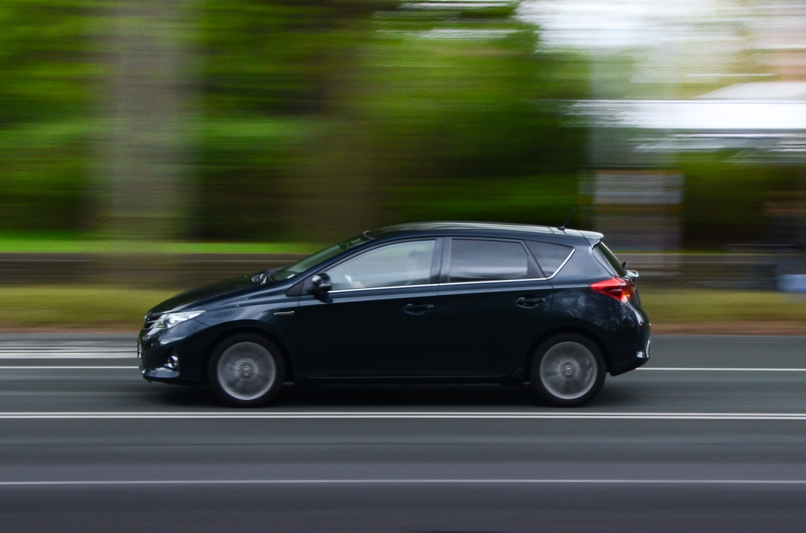

Why Does My Car Hesitate When Accelerating?
Acceleration hesitation is usually caused by either a spark issue (worn spark plugs, failing ignition coils) or a fuel delivery problem (clogged fuel filter, dirty injectors, weak fuel pump). A dirty Mass Air Flow (MAF) sensor or vacuum leak can also distort the air-fuel ratio when pressing the gas pedal.

Fuel vs. Spark: Identifying the Culprit
When you step on the gas pedal, your engine needs an immediate surge of air, fuel, and strong spark. If any of these three elements lags behind, the engine stumbles or jerks.
1. Ignition Spark Problems (Misfires under Load)
Worn spark plugs or a failing ignition coil pack might generate enough arc at idle, but when you accelerate, cylinder pressure rises sharply. This increased pressure makes it harder for the spark to jump the gap, causing severe engine jerking and triggering a flashing Check Engine light.
2. Fuel System Restrictions
A clogged fuel filter, a weak fuel pump, or dirty fuel injectors can maintain baseline fuel pressure at idle but fail to deliver the increased volume required during hard acceleration. This creates a "lean condition" where the engine bogs down until you lift off the throttle.
3. Dirty Mass Air Flow (MAF) Sensor
The MAF sensor measures the exact volume of air entering the engine. If dust or oil coats its internal wire, the sensor underreports incoming airflow. The engine computer fails to supply enough fuel when the throttle opens, leading to a momentary pause or lag.
4. Vacuum Leaks or Cracked Intake Boot
Unmetered air entering the engine through a cracked intake hose bypasses the MAF sensor completely. When accelerating, this extra air leans out the mixture, causing hesitation, high idle, or engine stalling.
How to Narrow Down the Problem
- Scan for OBD2 Trouble Codes: Codes like
P0300throughP0308point directly to cylinder spark misfires. Codes likeP0171indicate a lean air/fuel mixture (fuel delivery or vacuum leak). - Clean the MAF Sensor: Spraying the sensor wire with specialized MAF cleaner aerosol spray often restores smooth throttle response immediately.
- Inspect the Air Intake Hose: Bend the rubber intake tube in your hands to look for hidden cracks between the air filter box and the throttle body.
Frequently Asked Questions
Yes. Water contamination or old fuel in your gas tank prevents proper combustion, resulting in immediate stumbling when pushing the throttle.
Cold engines require a richer fuel mixture. A faulty engine coolant temperature sensor (ECT) can trick the computer into supplying a lean mixture before the engine warms up.